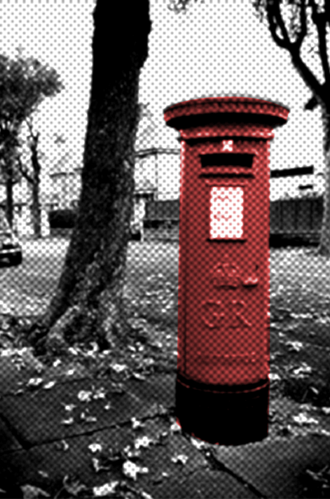

INTRO
TIMELINE
POSTCARD
INTRO
TIMELINE
POSTCARD
ตู้ไปรษณีย์ คือ ตู้สำหรับให้ประชาชนนำจดหมายซึ่งติดแสตมป์ค่าส่งแล้วมาหยอดเข้าไปในตู้ และจะมีบุรุษไปรษณีย์มารวบรวมจดหมายตามเวลาที่กำหนด
ประเทศไทยซึ่งเริ่มมีตู้ไปรษณีย์ พร้อมกับบริการไปรษณีย์นั้นก็ใช้สีแดงและดำ
สีสันของตู้ไปรษณีย์แตกต่างกันออกไปตามแต่ละประเทศ ประเทศในเครือจักรภพอังกฤษจะใช้สีแดงและสีดำเป็นหลัก สหรัฐอเมริกาใช้สีฟ้า
เนื่องจากระบบสาธารณูปโภคต่างๆ ได้รับอิทธิพลจากระบบของอังกฤษเป็นหลัก จึงใช้ตู้ไปรษณีย์สีแดงและดำเหมือนกับประเทศอังกฤษ

ตู้ไปรษณีย์มีได้หลายรูปแบบ เช่น แบบตั้งกับพื้นและแบบติดกับกำแพง
ในสมัยรัชกาลที่ 5
ได้มีการกำเนิดการไปรษณีย์ในสยาม
นับถึงปีนี้ประเทศไทยมี ไปรษณีย์
มานาน 135 ปีแล้ว